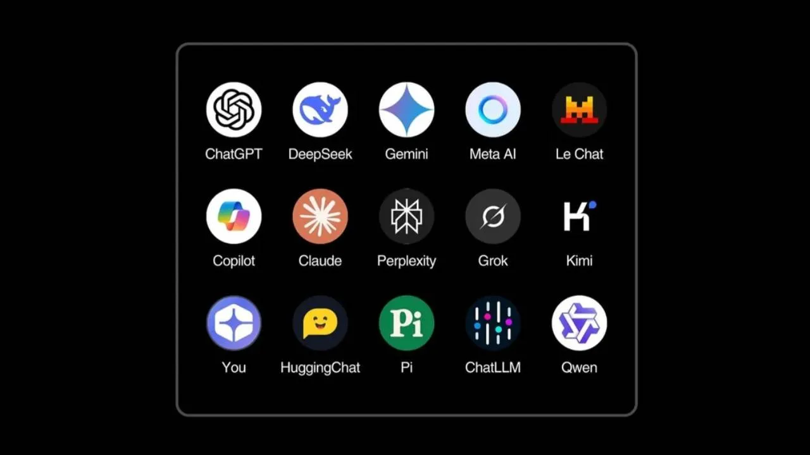
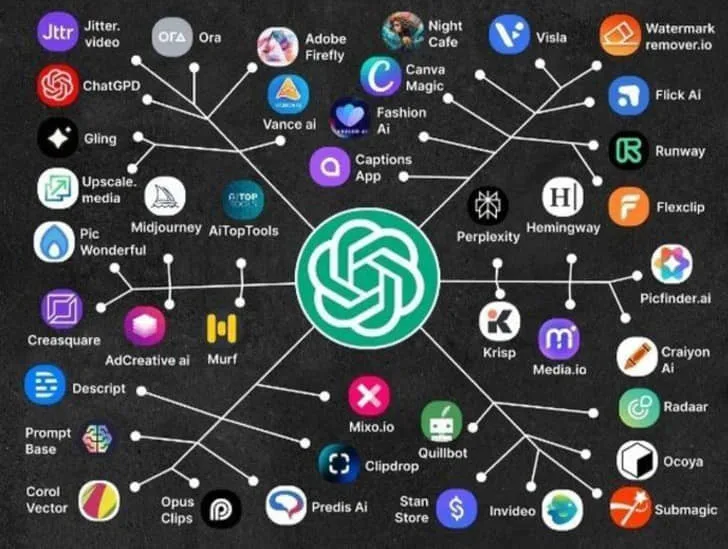

Ana Sayfa |
Nedir? |
Tarihçe |
Kullanım Alanları |
Çeşitleri |
Avantaj & Riskler |
Haberler |
Gelecek |
SSS |
Hakkımızda
Yapay Zeka Çeşitleri
Yapay zeka sistemleri yeteneklerine ve karmaşıklık düzeylerine göre farklı kategorilere ayrılır.

Yeteneklerine Göre Yapay Zeka
- Dar (Zayıf) Yapay Zeka: Sadece belirli bir görevi yerine getirmek için eğitilmiş sistemlerdir. (Örn: Yüz tanıma, Siri, Satranç bilgisayarları)
- Genel (Güçlü) Yapay Zeka: İnsan seviyesinde zekaya sahip, her alanda öğrenme ve problem çözme yeteneği olan teorik yapay zeka türüdür.
- Süper Yapay Zeka: İnsan zekasını her alanda geride bırakacağı varsayılan, gelecekteki teorik yapay zeka seviyesidir.
İşlevlerine Göre Yapay Zeka
- Tepkisel Makineler: Geçmiş deneyimleri hatırlayamaz, sadece anlık durumlara tepki verir.
- Sınırlı Hafıza: Geçmiş verileri kısa süreliğine kullanarak kararlar alabilir (Örn: Sürücüsüz araçlar).
- Zihin Teorisi: İnsanların duygularını ve düşüncelerini anlayabilen gelişmiş yapay zeka türü.
